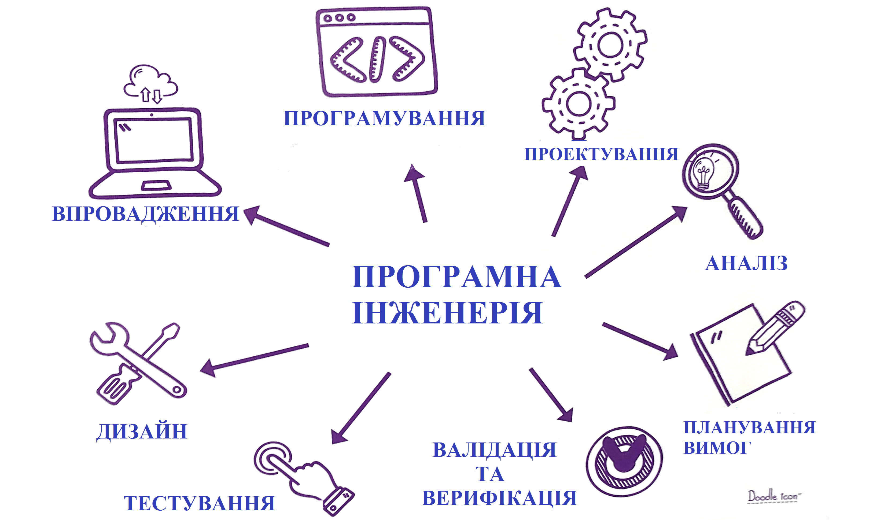

Спеціальність "Інженерія програмного забезпечення" орієнтована на:
Інженерію та реінженерію програмних систем, які відповідають функціональним вимогам, виявленим у заданій предметній області;
Планування, керування і контроль виконання вимог до створюваного програмного забезпечення;
Контролювання якості розроблюваних програмних продуктів;
Командну роботу зі створення програмних продуктів;
Інженерію програмного забезпечення для паралельних, розподілених, вбудованих мобільних та процесорних систем;
Оцінювання ступеня труднощів, ризиків, бюджету і часу протягом виконання проекту з розробки програмного забезпечення.

Спеціаліст із спеціальності "Інженерія програмного забезпечення" знатиме:
- Зміст інженерних та супровідних процесів життєвого циклу програмного продукту;
- Основні концепції моделювання та налізу програмного забезпечення та типи моделей програмного забезпечення;
- Концепції, стратегій та технології проектування та реалізації програмних систем;
- Технології кластерних, розподілених, паралельних обчислень;
- Мови програмування та інструментарій розроблення програмного забезпечення на відповідних мовах програмування;
- Принципи взаємодії і комунікацій та ролі в команді розробників програмного забезпечення;
- Етапи і принципи управління якістю процесів розробки протягом життєвого циклу виробництва програмного забезпечення/